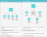

MQTT

MQTT is a publish/subscribe messaging transport protocol. It has low complexity, small code footprint and consumes low network bandwidth for messaging. The lightweight protocol and small packet size support makes it suitable for applications such as Machine to Machine (M2M) and Internet of Things (IoT).
The protocol runs over network protocols like TCP/IP that provide ordered, lossless, bidirectional connections. MQTT-SN v1.2, MQTT for Sensor Networks (formerly known as MQTT-S), is a version of the protocol targeted for embedded devices on non-TCP/IP networks, such as Zigbee. Connectionless network transports such as User Datagram Protocol (UDP) are not suitable because packets may be lost or arrive out of order. The protocol enables transmit of messages either in 1-to-1 or 1-to-n configuration. The messaging transport is agnostic to the content of the payload.
Discussion
-
What's the expansion for MQTT? The published OASIS standard does not give any expansion of MQTT.
MQTT used to mean MQ Telemetry Transport, where MQ is sometimes mistaken for Message Queue. In fact, MQ referred to IBM's MQ Series of products. Today, MQTT is not an acronym and it doesn't use traditional message queues.
-
How does the MQTT protocol work? MQTT uses Publish/Subscribe model or pattern. Publishers publish messages. Subscribers receive messages if they have subscribed to the same. However, publishers and subscribers don't communicate to each other directly. There's an intermediate central Server or Broker that mediates in between. Broker filters all incoming messages and distributes them to subscribers accordingly. Publishers and subscribers are also called Clients.
Subscribers subscribe to messages that are of interest to them. Such filtering could be topic-based, content-based, or type-based. Topics could be organized in a hierarchy.
With the publish/subscribe pattern, the publisher and subscribers don't need to know each other. They are not dependent on each other for initialization and synchronisation. Message delivery is one-to-many and can scale with respect to subscribers without burdening publishers.
It will also be apparent that MQTT operates unlike message queues. Messages cannot get stuck in a queue if no one reads them. In message queues, only one consumer can read the message. Message queues are also defined explicitly but in MQTT topics can be created on the fly.
-
What are the core features of MQTT? The core features of MQTT are:
- Simple to implement: This translates to small code and memory footprint for constrained devices.
- Lightweight and network-bandwidth efficient: Payload must be transferred without significant overhead.
- Handle abnormal client disconnection: Using what is called Last Will and Testament (LWT), if a client is not sending anything for some time, broker will automatically publish a message. For example, this can be useful to inform subscribers that an IoT device (publisher) is not reachable.
- Transport protocol is payload data agnostic: Data can be binary, JSON or any other format.
- Provides a Quality-of-Service data delivery: QoS can be selected based on the needs of the application.
- Supports continuous session awareness: Sessions can be continued even across intermittent network connections. This implies clients need not subscribe again when they reconnect to server.
- Retained messages: The last published message (with retained flag set to true) is stored at the broker so that new subscribers can immediately obtain last known good value rather than wait for the next update from publisher.
-
Why can't I use HTTP instead of MQTT? Altough popular on the web, HTTP is not suitable for small data packets typical in IoT. HTTP is document-centric whereas MQTT is data-centric. HTTP is a complex protocol. It's textual and therefore parsing HTTP is not trivial. MQTT is binary and encoding/decoding MQTT packets is a lot easier. Because of its publish-subscribe model, data distribution is one-to-many in MQTT whereas in HTTP it's limited to one-to-one.
An MQTT PUBLISH message header is 2-4 bytes; CONNECT message header is 14 bytes; HTTP header can be up to 1KB. A C implementation of an MQTT client can be as small as 30KB.
MQTT uses less battery power, can send more messages per hour and send them more reliably than HTTPS. MQTT uses more battery power to initiate a connection but this quickly compensated by gains as the connection stays open longer.
In fact, there are alternatives to MQTT that may be more suitable candidates for comparison than HTTP: AMQP, CoAP, XMPP, DDS, STOMP.
-
What was MQTT designed for and where is it popularly used today? IBM originally designed MQTT protocol for communication between oil pipeline stations over low bandwidth satellite links. It was later used for applications such as home automation and message broadcasting to ferries. Other areas where it's used include connected cars, asset tracking, smart metering, process control in manufacturing.
MQTT gained traction in IoT space due to its lightweight protocol. One popular example of its usage is by Facebook for its Facebook Messenger application.
-
What are the control packets supported in MQTT? Control packets can be summarized in the following groups:
- Connection Management: CONNECT, CONNACK, DISCONNECT, PINGREQ, PINGRESP
- Subscription Management: SUBSCRIBE, SUBACK, UNSUBSCRIBE, UNSUBACK
- Message Delivery: PUBLISH, PUBACK, PUBREC, PUBREL, PUBCOMP
- Authentication: AUTH
AUTH packet was introduced in MQTT version 5.0. PINGREQ is sent from client to server to indicate that client is alive though not sending any other control packet.
-
What sort of Quality of Service (QoS) does MQTT offer? MQTT protocol defines three levels of QoS for message delivery:
- QoS 0: At most once delivery. Receiver does not sent a response. Sender does not retry and hence deletes the message locally as soon as it's sent. Message arrives at the receiver once or not at all.
- QoS 1: At least once delivery. Receiver acknowledges the PUBLISH packet using the PUBACK packet.
- QoS 2: Exactly once delivery. Neither loss nor packet duplication is acceptable. This QoS level adds protocol overhead and specifies many rules for both sender and receiver. Packets PUBREC, PUBREL and PUBCOMP are involved instead of PUBACK used in QoS 1.
Sender will retry on unacknowledged packets only if client reconnects without a clean start and session is present.
-
Does MQTT support security? MQTT is a transport protocol that concerns message transmission. So, security features such as privacy of data, authentication and authorization of users, etc. have to be taken care by the developer. MQTT specification provides guidance about possible implementations such as TLS. Security-related aspects that need to be considered could be related to geography, industry or regulations.
TLS/SSL security and payload encryption can be used. The IANA has assigned port 8883 for MQTT over SSL, or secure MQTT over TCP or UDP. Incidentally, port 1883 is for MQTT over TCP or UDP We should note that SSL is not exactly lightweight and adds significant overhead.
Since Version 3.1 of MQTT protocol, there are two provisions:
- Add username and password in the CONNECT packet
- Include return codes in CONNACK packet to report security issues
In Version 5.0, MQTT adds the AUTH control packet. This can be used to implement complex authentication methods such as SCRAM, Kerberos or OAuth.
There is a supplemental publication that focuses on MQTT protocol's integration within the NIST Framework for Improving Critical Infrastructure Cybersecurity, simply called Cybersecurity Framework.
-
What are the limiting factors of MQTT to consider while using it? Here are some limiting factors of MQTT:
- The structure of the published data is not known to the subscriber. This information should be shared or known beforehand. When topic-based filtering is used, publisher and subscribers must know the right topics to use.
- The delivery of a message is not confirmed as there is no automatic confirmation from the recipient. Moreover, the publisher also does not know if there are any subscribers.
- MQTT uses TCP, which needs complex handshaking and is not easy on memory and power requirements. Standard states that TCP is a suitable transport and UDP is not. MQTT can also use TLS or WebSocket.
- Broker is centralized. This is not only a single point of failure but also can limit scalability. However, real-world implementations overcome this by managing a distributed broker cluster that clients see as a single logical broker. Examples of such cluster implementations are HiveMQ, VerneMQ, and EMQ.
- MQTT has no built-in security. Developers need to implement security on their own.
-
What software implementations of MQTT are available? Several MQTT client libraries are available based on different languages and for supporting varied devices. Broker or server implementations and tools are also available from different vendors as noted on MQTT GitHub Wiki.
Eclipse Mosquitto, a MQTT broker implementation, is about 120kB and requires 3MB RAM for 1000 clients connected.
Eclipse Paho client offers a number of features: automatic reconnect, offline buffering, message persistence, WebSocket or TCP support, blocking or non-blocking API, and high availability. For embedded devices of limited resources, Paho offers an ANSI standard C compliant library.
RabbitMQ server uses AMQP instead of MQTT but it offers a plugin for MQTT, making AMQP interoperable with MQTT.
Milestones
2010
2011
2011
2014
2015
2016
2018
OASIS releases MQTT Version 5.0. It supercedes the previous standard. Eclipse Paho 1.4.0 is expected to support this by June 2018 in C and Java. V5.0 support from Eclipse Mosquitto is expected by August 2018. It's expected that the latest version will go into production systems by Q4 2018. Main changes due to V5.0 are summarized by a HiveMQ blog post.
Sample Code
References
- Banks, Andrew and Rahul Gupta, eds. 2014. "MQTT Version 3.3.1." OASIS Standard, October 29. Accessed 2018-06-16.
- Banks, Andrew, Ed Briggs, Ken Borgendale, and Rahul Gupta, eds. 2018. "MQTT Version 5.0." OASIS Committee Specification 02, May 15. Accessed 2018-06-16.
- Boyd, Bryan. 2014. "MQTT - A practical protocol for the Internet of Things." SlideShare, LinkedIn, August 28. Accessed 2017-03-21.
- Brown, Geoff and Louis-Philippe Lamoureux. 2014. "MQTT and the NIST Cybersecurity Framework Version 1.0." OASIS Committee Note 01, May 28. Accessed 2017-03-04.
- EMQ. 2018a. "About." Accessed 2018-07-11.
- EMQ. 2018b. "EMQ ChangeLog and Release Notes." Accessed 2018-07-11.
- EMQ. 2018c. "EMQ Homepage." Accessed 2018-07-11.
- Eclipse Foundataion. 2015. "New Release of Eclipse Paho and Eclipse Mosquitto Continue Momentum of the Growing Open Source IoT Community and MQTT." Press release, March 4. Accessed 2018-06-16.
- Eclipse Foundation. 2018a. "Paho." Eclipse Proposals. Accessed 2018-06-16.
- Eclipse Foundation. 2018b. "Eclipse Paho Downloads." Eclipse Paho. Accessed 2018-06-16.
- Eclipse Foundation. 2018c. "Embedded MQTT C/C++ Client Libraries." Eclipse Paho. Accessed 2018-06-16.
- Eclipse Projects. 2018a. "Eclipse Mosquitto 1.4." Releases, Eclipse Mosquitto. Accessed 2018-06-16.
- Eclipse Projects. 2018b. "Eclipse Paho 1.4.0 (Photon)." Releases, Eclipse Paho. Accessed 2018-06-16.
- Eclipse Projects. 2018c. "Eclipse Mosquitto." Accessed 2018-06-16.
- FIWARE. 2020. "IoT over MQTT." FIWARE, June 30. Accessed 2020-07-20.
- Gupta, Rahul. 2014. "5 Things to Know About MQTT – The Protocol for Internet of Things." IBM developerWorks Blog, September 23. Accessed 2018-06-17.
- HiveMQ. 2015a. "MQTT Essentials: Part 1 – Introducing MQTT." HiveMQ Blog, January 12. Updated 2017-05-04. Accessed 2018-06-16.
- HiveMQ. 2015b. "MQTT Essentials Part 2: Publish & Subscribe." HiveMQ Blog, January 19. Updated 2018-01-08. Accessed 2018-06-16.
- HiveMQ. 2015c. "MQTT Essentials Part 8: Retained Messages." HiveMQ Blog, March 02. Updated 2018-06-18. Accessed 2018-06-19.
- HiveMQ. 2016. "Clustering MQTT – Introduction & Benefits." HiveMQ Blog, October 06. Updated 2018-06-18. Accessed 2018-06-19.
- HiveMQ. 2017. "MQTT 5: Is it time to upgrade to MQTT 5 yet?" HiveMQ Blog, December 19. Updated 2018-06-01. Accessed 2018-06-16.
- HiveMQ. 2018. "MQTT 5: Foundational changes in the protocol." HiveMQ Blog, January 8. Updated 2018-01-09. Accessed 2018-06-16.
- ISO Standard. 2016. "ISO/IEC 20922:2016: Information technology -- Message Queuing Telemetry Transport (MQTT) v3.1.1." June. Accessed 2018-06-16.
- Joubert, Emile. 2012. "MQTT Adapter." RabbitMQ Blog, September 12. Accessed 2018-06-16.
- Locke, Dave. 2010. "MQ Telemetry Transport (MQTT) V3.1 Protocol Specification." IBM developerWorks, August 19. Accessed 2018-06-16.
- MQTT FAQ. 2018. "Frequently Asked Questions." MQTT.org. Accessed 2018-06-16.
- MQTT GitHub. 2014. "Software mqtt/mqtt.github.io." GitHub Wiki, August 20. Accessed 2017-03-04.
- Minteer, Andrew. 2017. "Analytics for the Internet of Things (IoT)." Packt Publishing, July.
- NIST. 2018. "NIST Releases Version 1.1 of its Popular Cybersecurity Framework." NIST, April 16. Accessed 2017-03-04.
- Niblett, Peter. 2013. "Embedded Java and MQTT." InfoQ, via SlideShare, September 2. Accessed 2018-06-16.
- Nicholas, Stephen. 2012. "Power Profiling: HTTPS Long Polling vs. MQTT with SSL, on Android." May 31. Accessed 2018-06-16.
- Patierno, Paolo. 2014. "MQTT & IoT protocols comparison." Microsoft Embedded Conference, Napoli, February 15. SlideShare, February 19. Accessed 2018-06-16.
- Piper, Andy. 2011. "Interview with Angel Diaz and Arlen Nipper." IBM Podcast, November 18. Accessed 2018-06-16.
- Piper, Andy. 2013. "MQTT for Sensor Networks – MQTT-SN." Blog, MQTT, December 2. Accessed 2020-07-20.
- RF Wireless World. 2018. "MQTT vs HTTP | Difference between MQTT and HTTP protocols." Accessed 2018-06-17.
- Rathi, Piyush. 2017. "Mqtt (Message queue telemetry protocol)." Govt. Engineering College Ajmer, via SlideShare, March 6. Accessed 2018-06-16.
- Raue, Kristian. 2018. "New 1.5 release, MQTT 5.0 roadmap and commercial sponsor for Open-Source Eclipse Mosquitto MQTT Broker." Press release, Eclipse Mosquitto, May 7. Accessed 2018-06-17.
- Stansberry, James. 2015. "MQTT and CoAP: Underlying Protocols for the IoT." ElectronicDesign, October 7. Accessed 2020-07-20.
- Zhang, Lucy. 2011. "Building Facebook Messenger." Facebook Notes, August 12. Accessed 2018-06-16.
- andyp. 2012. "Mosquitoes! Rabbits! Facebook! Portals! (news round-up)." MQTT.org, September 13. Accessed 2018-06-16.
Further Reading
- MQTT Website
- Bird, Rob. 2017. "SDC 2017 Session: An Introduction to MQTT: Why HTTP isn't the King of the Internet of Things." Samsung Developer Conference 2017, YouTube, October 20. Accessed 2018-06-16.
- Bryan Boyd, Joel Gauci, Michael P Robertson, Nguyen Van Duy, Rahul Gupta, Vasfi Gucer, Vladimir Kislicins. 2014. "Building Real-time Mobile Solutions with MQTT and IBM MessageSight." IBM Redbooks, October. Accessed 2017-03-21.